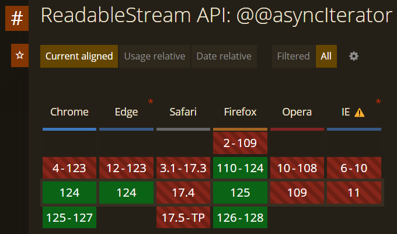
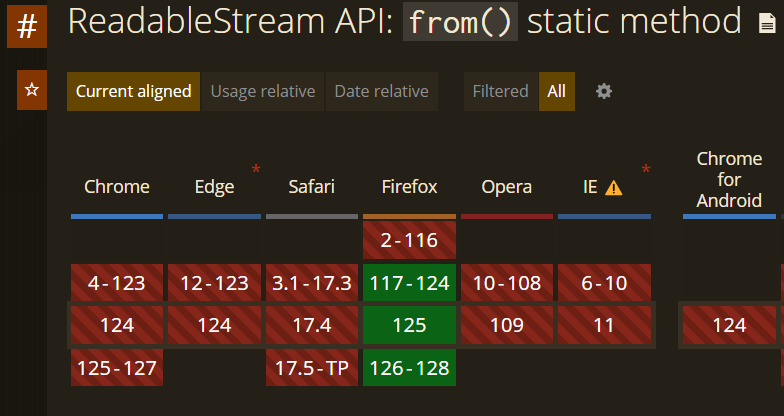
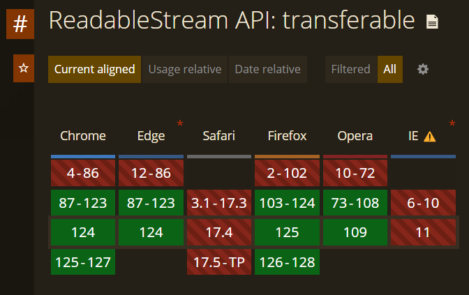

« The Streams API allows JavaScript to programmatically access streams of data received over the network and process them as desired by the developer. »
Streams API, MDN
await a
Promise
string,
number,…
Uint8Array
renderToReadableStream()
in React
ReadableStream
const readable = new ReadableStream(/* ignore for now */);
const reader = reader.getReader();
while (true) {
// get the next chunk, waiting for it if necessary
const { done, value } = await reader.read();
if (done) {
// no more chunks, end of stream
break;
}
// got a chunk!
console.log(`received chunk: ${value}`);
}
// reading HTTP response without streaming
const response = await fetch("https://example.com");
const bytes = await response.arrayBuffer();
console.log(`received ${bytes.byteLength} total bytes`);
// reading HTTP response with streaming
const response = await fetch("https://example.com");
const body = response.body; // ReadableStream<Uint8Array>
const reader = body.getReader(); // ReadableStreamDefaultReader
while (true) {
const { done, value } = await reader.read();
if (done) break; // reached end of stream
console.log(`received chunk with ${value.byteLength} bytes`);
}
ReadableStreamfetch()
const readable = new ReadableStream({
start(controller) {
// called immediately during construction
// for setup: open connections, add listeners,...
},
pull(controller) {
// called when more data is needed
},
cancel(reason) {
// called when consumer is no longer interested
// for cleanup: close connection, remove listeners,...
}
});
ReadableStream
const readable = new ReadableStream({
pull(controller) {
// to push a chunk onto the stream:
controller.enqueue("some data");
// to close the stream normally (i.e. reached end of file)
controller.close();
// to close the stream abnormally (i.e. I/O error)
controller.error(new Error("oh no"));
}
});
let clickListener;
const clickStream = new ReadableStream({
start(controller) {
// add listener which pushes clicks onto the stream
clickListener = (event) =>
controller.enqueue({ x: event.pageX, y: event.pageY });
window.addEventListener('click', clickListener);
},
pull(controller) {
// nothing to do here, we can't "request" more click events
},
cancel(reason) {
window.removeEventListener('click', clickListener);
}
});
= a "push source": data is added even when no-one is reading
let page = 1;
const blogPostStream = new ReadableStream({
async pull(controller) {
//^^^^^ stream will wait for previous pull
// before starting a new pull
const response = await fetch(`/api/posts?page=${page}`);
const posts = await response.json();
posts.forEach((post) => controller.enqueue(post));
page += 1;
}
});
= a "pull source": data is only added when requested
const response = await fetch("https://example.com");
const body = response.body;
const reader1 = body.getReader();
while (true) {
const { done, value } = await reader1.read();
if (done) break; // reached end of stream
console.log(`received chunk with ${value.byteLength} bytes`);
}
const reader2 = body.getReader();
while (true) {
const { done, value } = await reader2.read();
// ^ will always be { done: true, value: undefined };
if (done) break;
}
tee()
const response = await fetch("https://example.com");
const body = response.body;
const [body1, body2] = body.tee();
const reader1 = body1.getReader();
while (true) {
const { done, value } = await reader1.read();
if (done) break; // reached end of stream
console.log(`received chunk with ${value.byteLength} bytes`);
}
const reader2 = body2.getReader();
while (true) {
const { done, value } = await reader2.read();
// ^ receives the same chunks as reader1
if (done) break;
}
WritableStream
// example from FileSystemWritableFileStream on MDN
// open a "Save file" dialog to let the user choose a file
const newFileHandle = await window.showSaveFilePicker();
// create a WritableStream from our file
const writable = await newFileHandle.createWritable();
// write to the file
const writer = writable.getWriter();
await writer.write("This is my file content");
// close the file and write the contents to disk
await writer.close();
WritableStream
const writable = new WritableStream({
start(controller) {
// called immediately during construction
},
write(chunk, controller) {
// called when a new chunk is written
},
close() {
// called when no more data will be written
// (e.g. end of input)
},
abort(reason) {
// called when producer encounters a problem
}
});
const logStream = new WritableStream({
write(chunk) {
console.log("Wrote chunk: ", chunk);
},
close() {
console.log("Done writing");
},
abort(reason) {
console.error("Aborted by producer: ", reason);
}
});
const readable = new ReadableStream(/* ... */);
const writable = new WritableStream(/* ... */);
await readable.pipeTo(writable);
readable and writes it to
writable
TransformStream
const upperCaseTransform = new TransformStream({
start(controller) {},
transform(chunk, controller) {
// called when a new chunk is written to the writable end
// can transform it and enqueue to the readable end:
controller.enqueue(chunk.toUpperCase());
},
flush(controller) {}, // called when writable end is closed
cancel(reason) {
// called when writable end is aborted
// or readable end is cancelled
}
});
const input = new ReadableStream(/* ... */);
const upperCaseTransform = new TransformStream({
transform(chunk, controller) {
controller.enqueue(chunk.toUpperCase());
}
});
const output = new WritableStream(/* ... */);
input
.pipeTo(upperCaseTransform.writable)
.catch(() => {});
// ^^^ important: don't await the pipeTo() call!
upperCaseTransform.readable
.pipeTo(output).catch(console.error);
const input = new ReadableStream(/* ... */);
const upperCaseTransform = new TransformStream({
transform(chunk, controller) {
controller.enqueue(chunk.toUpperCase());
}
});
const output = new WritableStream(/* ... */);
input
.pipeThrough(upperCaseTransform)
.pipeTo(output).catch(console.error);
const input = new ReadableStream(/* ... */);
const upperCaseTransform = new TransformStream(/* ... */);
const reverseTransform = new TransformStream({
transform(chunk, controller) {
controller.enqueue(chunk.reverse());
}
});
const output = new WritableStream(/* ... */);
input
.pipeThrough(upperCaseTransform)
.pipeThrough(reverseTransform)
.pipeTo(output).catch(console.error);
ReadableStream: holds chunks
enqueued by the backing source which the reader hasn't read yet
WritableStream: holds chunks
written by the writer which the backing sink hasn't processed
yet
TransformStream: has queues on
writable end (pre‑transform) and readable end
(post‑transform)
each stream has a queuing strategy, which determines the desired size of the stream's queue
let s1 = new CountQueuingStrategy({ highWaterMark: 10 });
// ^ want at least 10 chunks in the queue
let s2 = new ByteLengthQueuingStrategy({ highWaterMark: 1024 });
// ^ want at least 1 KB in the queue (for byte streams)
let readable = new ReadableStream({
pull(controller) {
console.log("pull called");
controller.enqueue("chunk");
}
}, new CountQueuingStrategy({ highWaterMark: 10 }));
// ^ calls pull() 10 times, then pauses
ReadableStream: stop
calling pull()
WritableStream: signal "not
ready" to writer
integrates with JavaScript's
for await of
// before:
const readable = new ReadableStream(/* ... */);
const reader = reader.getReader();
while (true) {
const { done, value } = await reader.read();
if (done) {
break;
}
console.log(`received chunk: ${value}`);
}
integrates with JavaScript's
for await of
// after:
const readable = new ReadableStream(/* ... */);
for await (const value of readable) {
console.log(`received chunk: ${value}`);
}
 caniuse.com
ReadableStream.from()
converts arrays, iterables or async iterables to a
ReadableStream
ReadableStream.from(["an", "array", "of", "chunks"]);
ReadableStream.from(new Set(["a", "set", "of", "chunks"]));
ReadableStream.from((async function*() {
yield "an";
yield "async";
yield "generator";
})());
// in Node.js:
ReadableStream.from(fileHandle.createReadStream());
ReadableStream.from()
 caniuse.com
all streams are transferable, which means you can
postMessage() them to a worker
// page.js
const worker = new Worker("worker.js");
const { readable, writable } = new TransformStream();
worker.postMessage(readable, { transfer: [readable] });
const writer = writable.getWriter();
writer.write("Hello world!"); // send to worker's ReadableStream
writer.close();
// worker.js
onmessage = async (event) => {
const readable = event.data; // transferred ReadableStream
for await (const chunk of readable) {
console.log(chunk); // -> "Hello world!"
}
};
move CPU-intensive work to another thread
// page.js
const worker = new Worker("worker.js");
worker.onmessage = async (event) => {
const transform = event.data; // transferred TransformStream
const input = (await fetch("https://example.com")).body;
const output = input.pipeThrough(transform);
for await (const chunk of output) { console.log(chunk); }
};
// worker.js
const transform = new TransformStream({
transform(chunk, controller) {
controller.enqueue(doExpensiveTransform(chunk));
}
});
self.postMessage(transform, { transfer: [transform] });
 caniuse.com
ReadableStream.from()